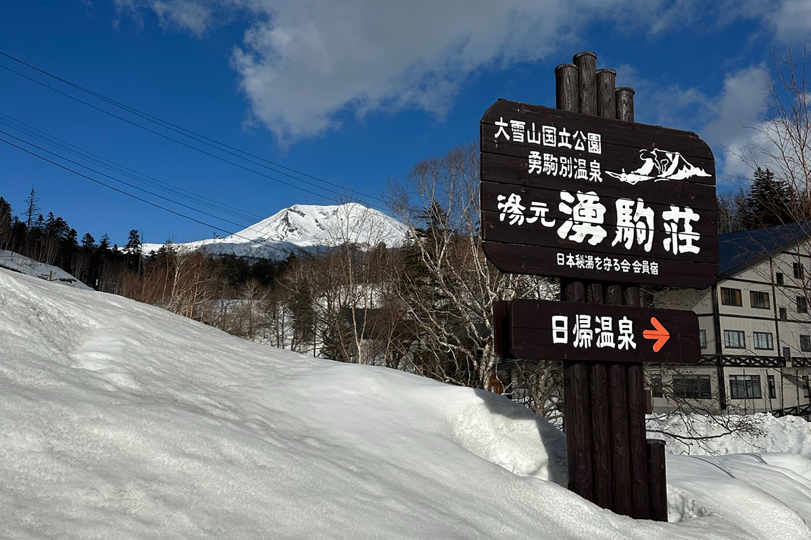
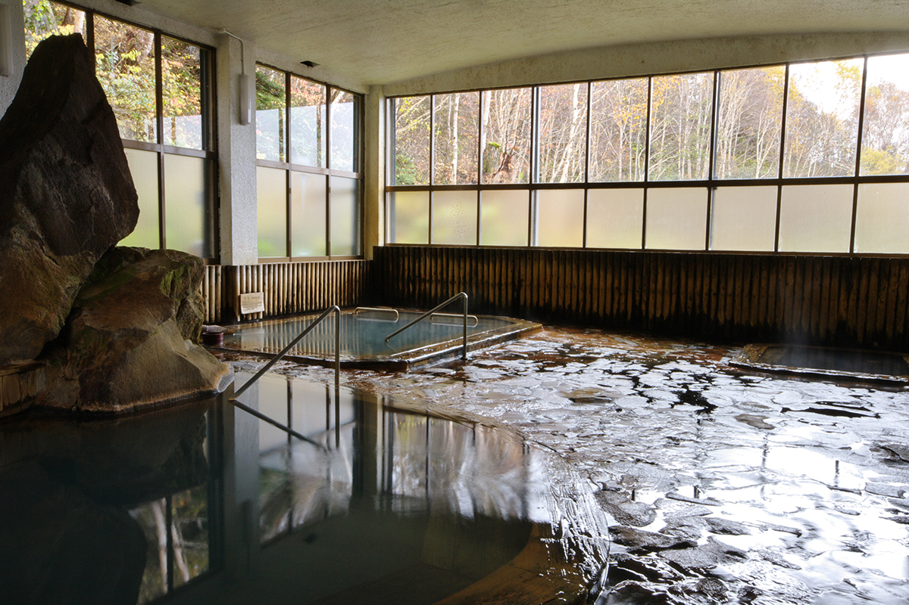
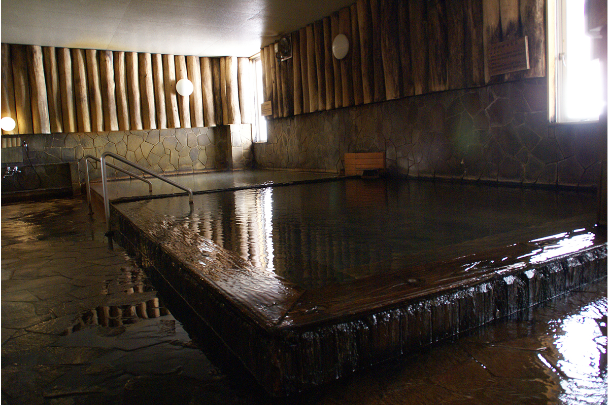
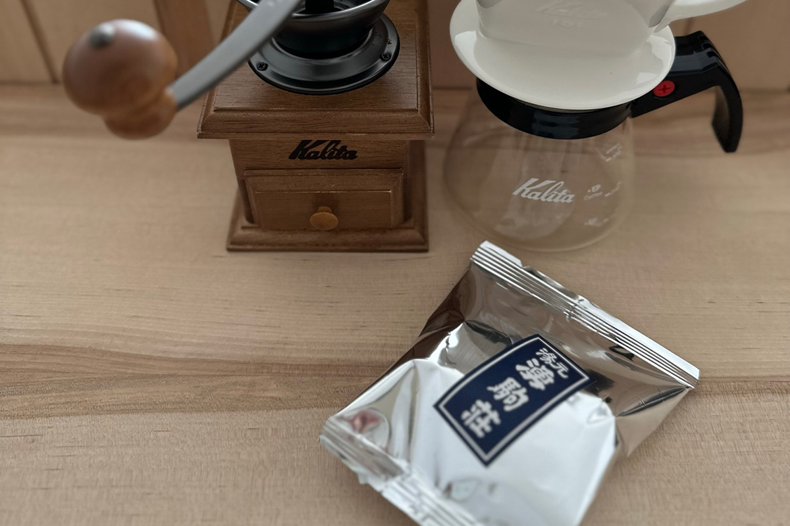
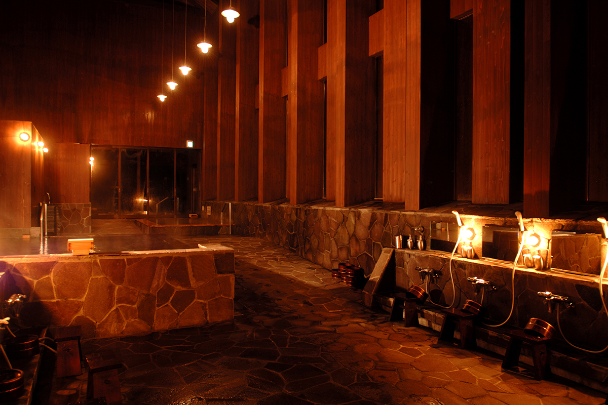
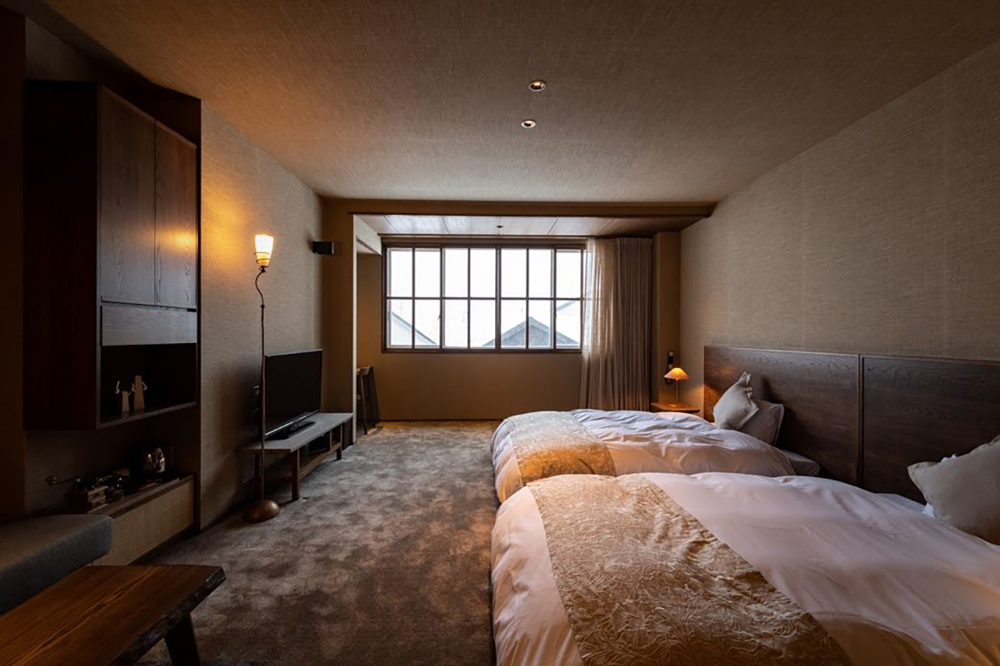
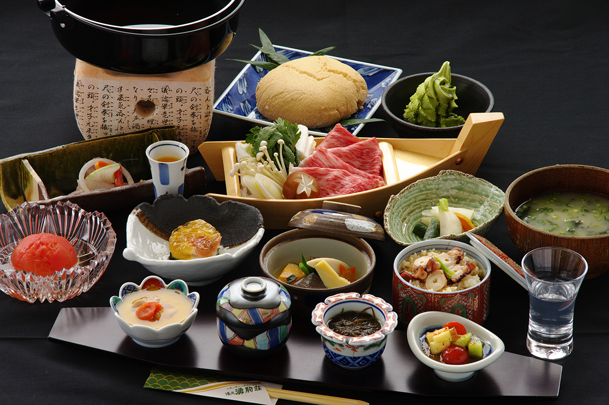

Префектура Хоккайдо · онсэн Асахидакэ · рёкан
«Юмото Юкомансо»: пять источников у подножия Асахидакэ, ради которых стоит остаться на две ночи

В горах Хоккайдо, у подножия Асахидакэ, есть рёкан, где из-под земли бьют сразу пять разных источников. Исследовательница онсэнов, которая проводит в поездках по горячим источникам около 200 дней в году, советует ехать сюда минимум на две ночи.
Зачем
Онсэн, в котором не нужно торопиться
Эта исследовательница онсэнов пишет о горячих источниках Японии и других стран, преподаёт курс лечения на водах в университете и смотрит на купание ещё и глазами специалиста по китайской медицине. Её главный совет простой: в онсэн нужно ехать хотя бы на две ночи. Тогда между приездом и отъездом появляется целый свободный день без дороги и сборов, вода успевает подействовать, а сама поездка начинает выглядеть иначе.
Для такого отдыха она выбрала рёкан «Юмото Юкомансо» в онсэне Асахидакэ, в горах в центре Хоккайдо. Здесь можно попробовать воду пяти разных источников, не выходя из гостиницы.
Вода
Пять источников и ни одного одинакового

У рёкана пять собственных источников, и вместе они дают больше 300 литров воды в минуту. Воду не гоняют по кругу: она течёт в бассейны и уходит через край. Каждый источник наполняет свой бассейн, поэтому купание здесь похоже на дегустацию: переходишь из одного бассейна в другой и сравниваешь.
По составу это сульфатные, гидрокарбонатные и хлоридные воды с магнием, кальцием и натрием. Одна вода прозрачная и нежаркая, другая, «мото-ю» из главного источника, мутная и сильная, третья будто набита минералами. Они отличаются и на вид, и на ощупь, и, по словам исследовательницы, все пять ощущаются совершенно по-разному. Температуру воды на выходе из источников рёкан не раскрывает.

С 16 ноября по 16 декабря 2026 года купальня «Юкоман-но ю» в главном здании закрыта: в ней обновляют трубы и бассейны.
После купания можно посидеть в кафе-уголке, отделанном хоккайдским деревом, и выпить воды из горного родника Асахидакэ или кофе. Вечером лучшее место у камина в гостиной, на диване рядом с огнём. Номера тоже похожи на горную хижину, и в них трудно не задержаться. Время здесь летит, и одной ночи, как признаётся исследовательница, мало.

День второй
Свободный день в горах
Если остаться на две ночи, на средний день находится время для отдельной купальни «Камигами-но ю», что значит «Источник богов». Она совсем не похожа на главную: высокий зал без перекрытий до самой крыши, и свет, который падает в него сверху, делает это место почти торжественным.

Когда захочется подвигаться, стоит выйти в лес вокруг рёкана. Зимой здесь катаются на лыжах, но даже простая прогулка по снежному полю на взятых напрокат снегоступах будет хорошей нагрузкой. На обратном пути исследовательница советует заехать в город Асахикава и посмотреть мастерские хоккайдской мебели, а оттуда добраться до Биэя.
Номер и ужин
Дерево, гребешки и морское ушко

В номерах рёкана нет кухни и трансфера от станции тоже нет, зато есть прачечная и Wi-Fi.
На ужин подают блюда, которых не ждёшь от затерянного в горах онсэна. Хоккайдское морское ушко запекают в соляной корке с ламинарией, а внутри оно остаётся пухлым и сочным. Ещё один сюрприз: крокеты из картофеля «Инка-но мэдзамэ», который сначала выдерживают в хранилище и только потом готовят.

Рёкан «Юмото Юкомансо»
- Адрес
- префектура Хоккайдо, уезд Камикава, Хигасикава, Юкомамбэцу
- Телефон
- +81 166-97-2101
- Цены / Вход
- ночь с ужином и завтраком от 15 000 иен с налогом и сервисным сбором
- Заезд / выезд
- 15:00 / 10:00
- Сайт
- yukoman.jp